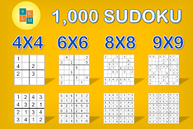
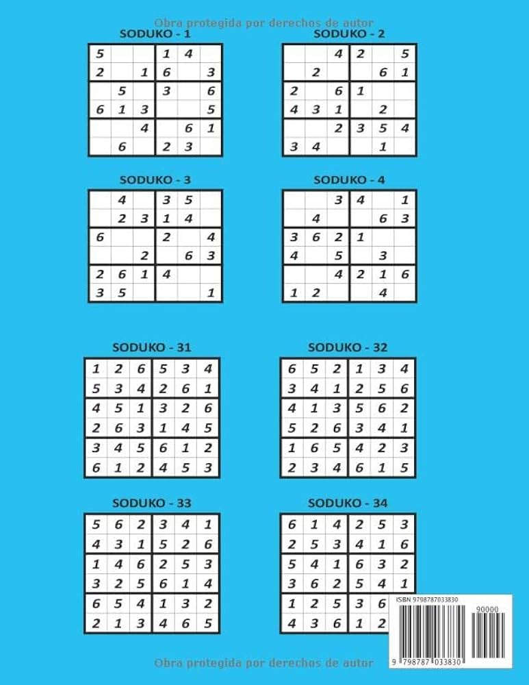
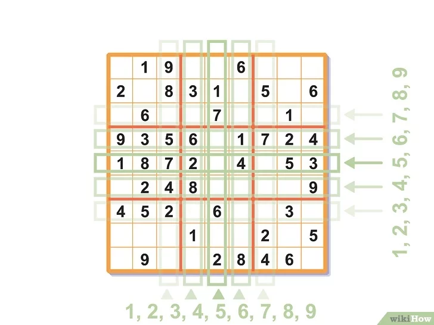
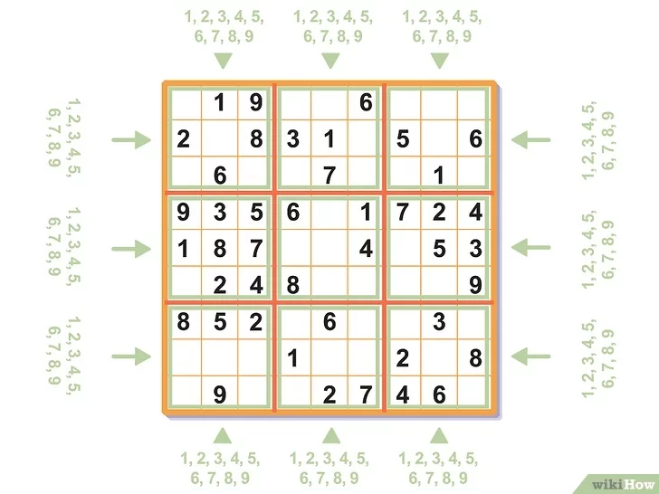
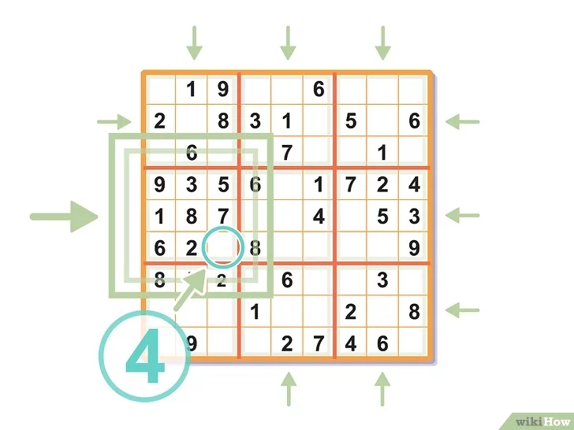

Básico:
Níveis mais simples, vai do infantil - muito fácil até o dificil, apesar do 9x9 também ter o muito fácil
Sudoku 4x4 e 6x6 são versões simplificadas e introdutórias do clássico, usando grades menores (4x4 com blocos 2x2 e 6x6 com blocos 2x3) e números de 1 a 4 ou 1 a 6, respectivamente, com a regra de que cada número deve aparecer apenas uma vez por linha, coluna e bloco, sendo ótimos para crianças e iniciantes aprenderem a lógica do jogo. Você pode jogar online em sites como Sudoku-Puzzles.net, SudokuOnline.io, ou baixar aplicativos para celular e imprimir em geradores de PDF, focando em preencher as células vazias sem repetições nas seções designadas.
Sudoku 4x4: Grade: 4x4, Blocos: 4 blocos de 2x2, Números: 1, 2, 3, 4, Objetivo: Preencher a grade para que cada número apareça uma vez em cada linha, coluna e bloco 2x2.
Sudoku 6x6: Grade: 6x6, Blocos: 6 blocos de 2x3, Números: 1, 2, 3, 4, 5, 6, Objetivo: Preencher a grade para que cada número apareça uma vez em cada linha, coluna e bloco 2x3.
Dicas para Resolver
Use a lógica e eliminação: procure por números que já estão na linha, coluna ou bloco para ver onde o número que falta pode ir.
Comece com as linhas/colunas/blocos que têm mais números já preenchidos.
Mantenha o foco em um número por vez, marcando-o quando o posicionar corretamente.


Utilização técnica de coordenas (Este e Norte,x,y,z, mais possibilidades, visada (principalmente a em telecom), mapeamento de possibilidades incluindo a matemática, estatística e a probabilidade, como o teorema de fresnel...
Criar pontos referência, ou seja, menos campos preenchidos, porém é importante criar mesmo que já tenha.
Verificação de um campo.
Uma linha por coluna ou linha com uma possibilidade.
Com ponto de referência.
Sem ponto de referência.
Verificar de 1 a 9, considerando os números que faltam.
O número mais utilizado
Esta estratégia é óbvia, mas vale a pena ser mencionada. Ela consiste em analisar a tabela e encontrar o número mais utilizado. A partir disso, elimine as posições que esse número não pode ocupar e verifique se é possível posicionar ele em algum lugar.
Grupos quase completos
Esta estratégia também é bem intuitiva. Ela consiste em analisar linhas, colunas e subgrupos 3x3 que estejam quase completos. Observe os números faltantes nesses “grupos” e olhe a tabela completa para ver se ela fornece alguma pista de como posicionar um desses números faltantes.

Observe linhas e colunas. A regra fundamental do sudoku é que toda linha e toda coluna deve ser preenchida com algarismos de 1 a 9. Isso significa que um mesmo número nunca aparecerá duas vezes na mesma linha ou coluna.

Preste atenção aos números dos quadrados grandes. Do mesmo modo, os quadrados grandes são preenchidos com números de 1 a 9. Como há apenas 9 compartimentos em cada um deles, aqui também cada algarismo só poderá figurar uma vez.
Portanto, se já existe um número 2 em um determinado quadrado grande, você não poderá usá-lo nesse quadrado outra vez.

Procure um quadrado grande com um único espaço vazio. Caso encontre um, será fácil preenchê-lo: basta descobrir qual número ele ainda não tem.
Se, por exemplo, esse grande quadrado tem todos os números de 1 a 3 e de 5 a 9, o número que falta é 4.